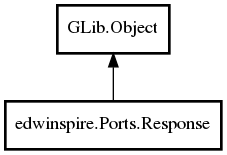

edwinspire.Ports.Response Reference Manual
Packages
libspire_serial
edwinspire
Ports
Response
Response
Response.with_args
ToString
CMEError
CMSError
Lines
Raw
Return
Response
Object Hierarchy:

Description:
public
class
Response
:
Object
Response From Modem
Namespace:
edwinspire.Ports
Package:
libspire_serial
Content:
Creation methods:
public
Response.with_args
(
ResponseCode
Return,
ArrayList
<
string
> Lines,
string
raw,
CME
cmeError =
None
,
CMS
cmsError =
None
)
Constructor with parameter
public
Response
()
Default constructor
Methods:
public
string
ToString
()
Fields:
public
CME
CMEError
public
CMS
CMSError
public
ResponseCode
Return
Response to AT command sent
public
string
Raw
Raw data
public
ArrayList
<
string
>
Lines
Lines received in response to AT Command